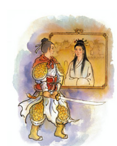

여성영웅소설 서사 구조

여성영웅 소설에 대표적인 서사 구조
- 영웅의 탄생
- 여성으로서의 한계 경험과 조력자 등장
- 허물을 벗어 절세가인이 되거나 남장을 통해 남성성 획득
- 뛰어난 솜씨로 주변 사람들에게 인정받음
- 적대자의 등장으로 곤란한 처지에 놓임
- 적대자를 물리치고 문제를 해결함
- 더 강한 적대자의 습격을 막아내고 격퇴함
- 공로를 인정받아 보상을 얻고 조력자 남성과의 혼인 혹은 영웅으로서의 삶을 영위함
여성의 사회활동이 거의 없던 시대적 배경과 달리, 여성을 주인공으로 하는 영웅소설 또한 꾸준히 생산되었다.
하지만 남성과 여성의 할 일이 철저히 나누어져 있던 시대에 영웅의 역할은 남성의 몫이었다.
그래서 여성영웅소설 속 영웅은 남성성을 쟁취하거나, 다른 남성을 이용하여 영웅적 면모를 나타낸다.
남장은 여성영웅소설의 중요한 서사적 기반으로, 후에 정체가 탄로나 남장해제 상태로 연결된다.
남장 - 남장해제의 과정은 여성영웅소설의 핵심 단락이 된다.
전통적 여성의 활동영역은 가정이다. 사회는 가정에 충실하고 바깥일에는 관심을 갖지 않는 것을 여성의 미덕으로 여겼다.
반면 영웅으로서의 활약은 대부분 가정이 아닌 외부에서 일어난다.
여성영웅에게 요구되는 가치 두 가지는 함께 실현되지 못하고 서로 대립된다.
여성 영웅이 가정을 제쳐두고 외부에서 활동하는 것은 여성에게 부여되는 사회적 요구를 거부하는 행동이기 때문에
이 과정에서 여성은 남성으로(혹은 여성영웅의 대리인) 위장하여 가정 내 성적 역할에서 벗어난다.
<홍계월전>과 같이 영웅으로서 계속 활약하며 영웅적인 면모를 보이는 경우도 있지만,
영웅으로서의 활약이 끝나고 가정으로 복귀해 충실한 여성의 역할을 해냄으로써 여성의 미덕 또한 지키는 양상을 보이는 경우가 많다.
위와 같이 여성영웅소설의 서사구조는 '변신'의 양상, '영웅적 활약'의 양상, '복귀'의 양상이 단계적으로 나타난다.
주인공은 일상세계에서 모험으로 가는 과정(②)에서 남성성을 위장하고, 공로를 인정받은 직후 혹은 적대자의 등장 직전(④,⑤)이나 공로를 인정받기 전에(⑧) 여성의 정체성을 들키게 된다.
하지만 그간의 공이 크고 능력을 인정받아 벌보다는 오히려 상을 받게 된다.
작품에 따라서 위와 같은 순서로 소설이 진행되기도 하지만 그렇지 않은 경우도 있다.
항상 '변신', '영웅적 활약', '복귀'의 양상으로 서사가 진행되는 것은 아니지만, 이 세 양상들은 대부분의 여성영웅소설에서 공통적으로 나타난다고 볼 수 있다.